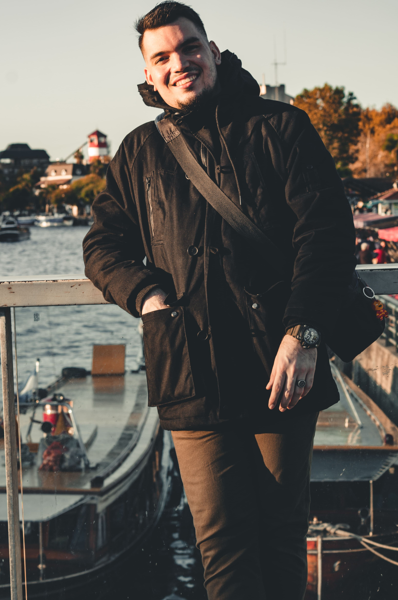

About Me
I am from Venezuela, where we welcome you with coffee at home, based in Argentina after having a stay in Peru.
We can all take a photo, but capturing the right mood or moment is a bit more challenging. My place in the world is behind a camera: there I feel connected to everything else.
I fell in love with photography when I realized that I could tell stories through images. I take photos out of an insatiable need to share these narratives with everyone around me. Photography allows me to do it every day.